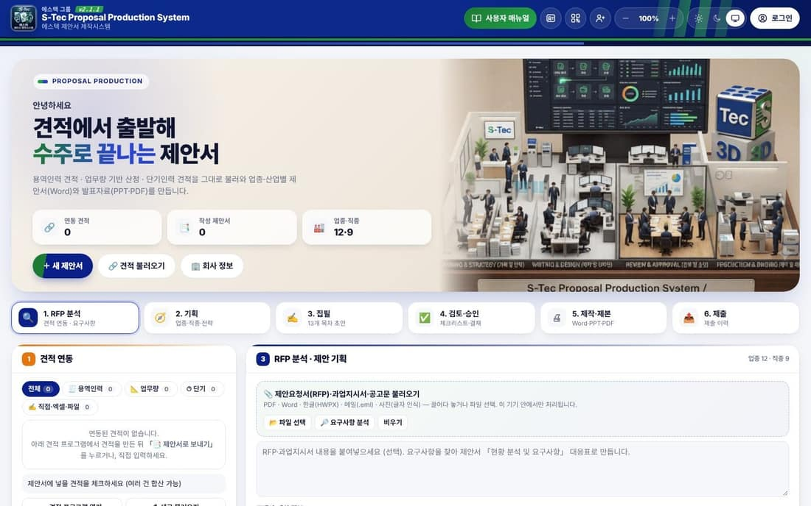
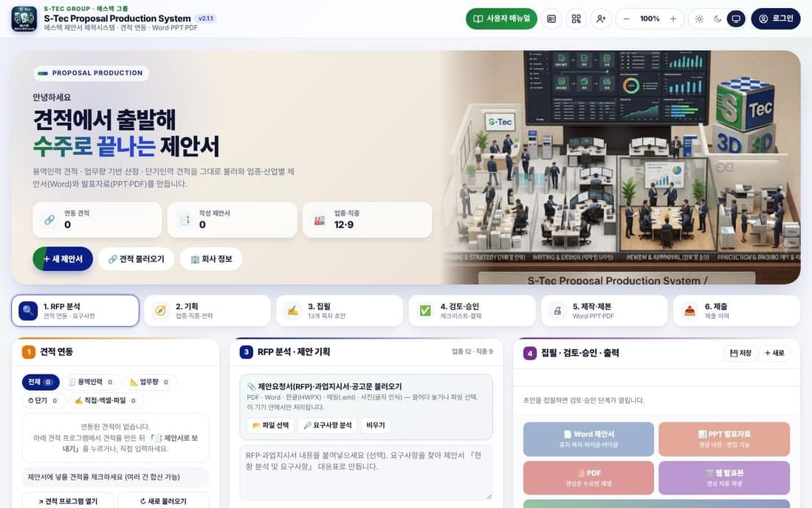
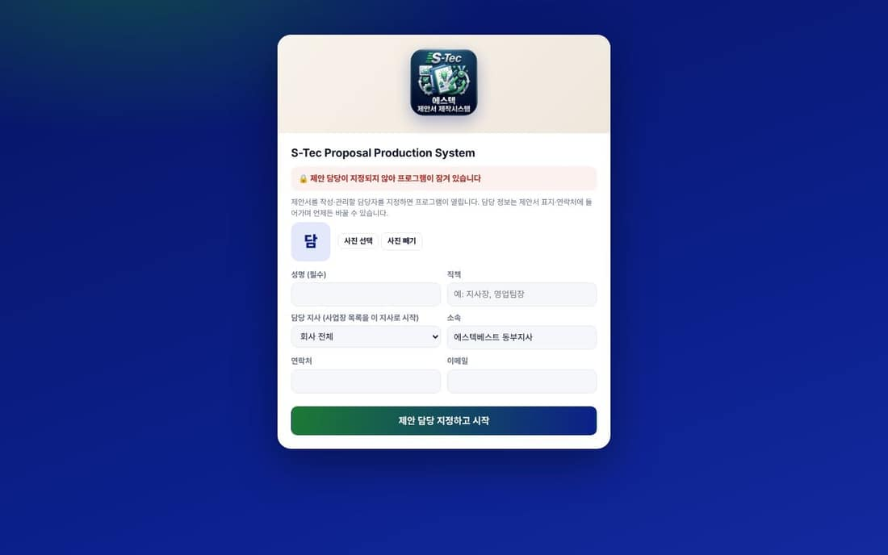
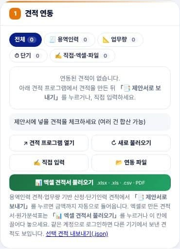
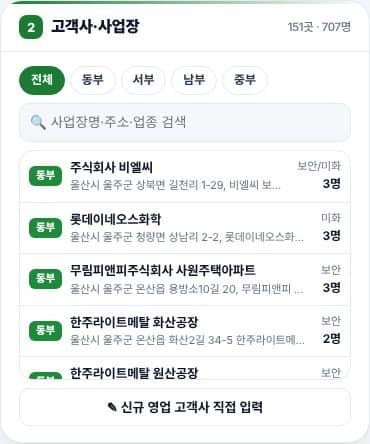
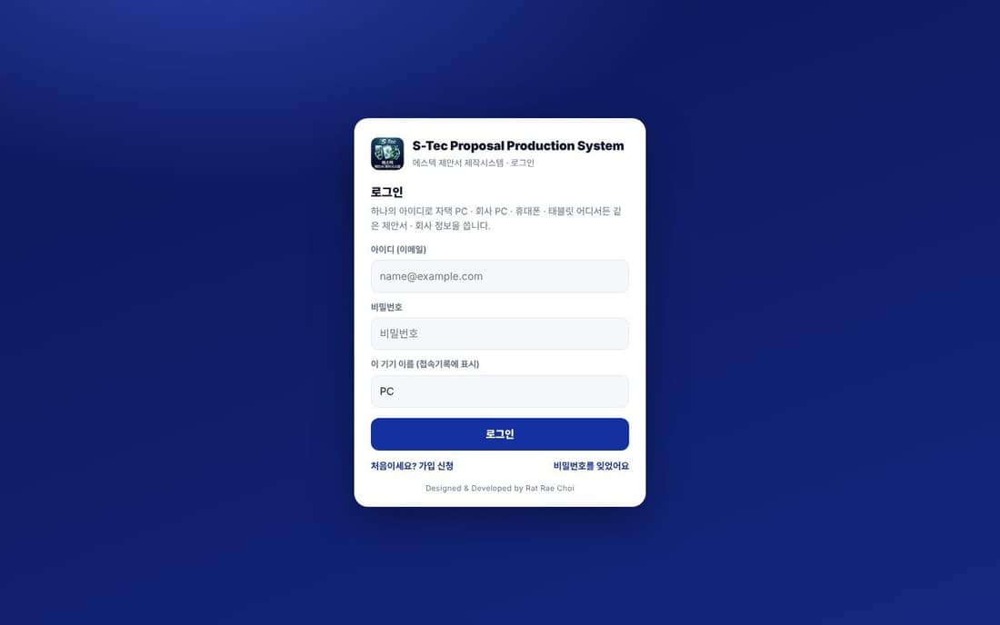
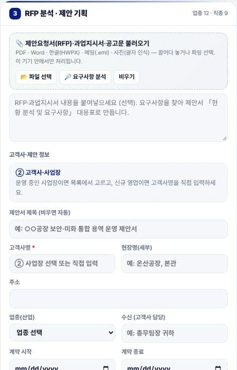
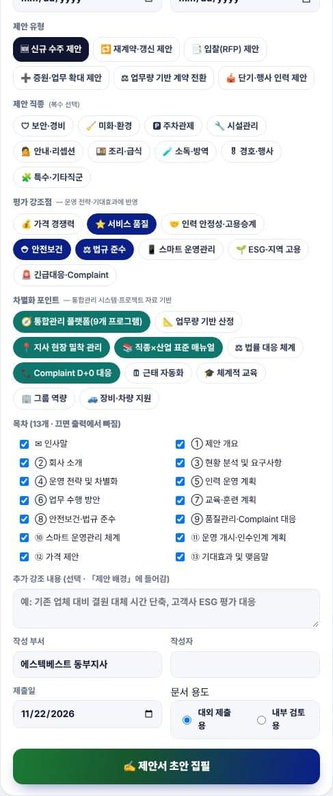
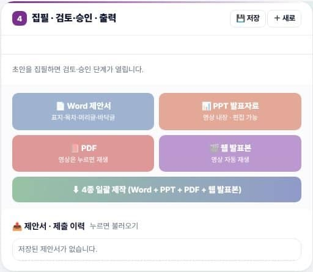
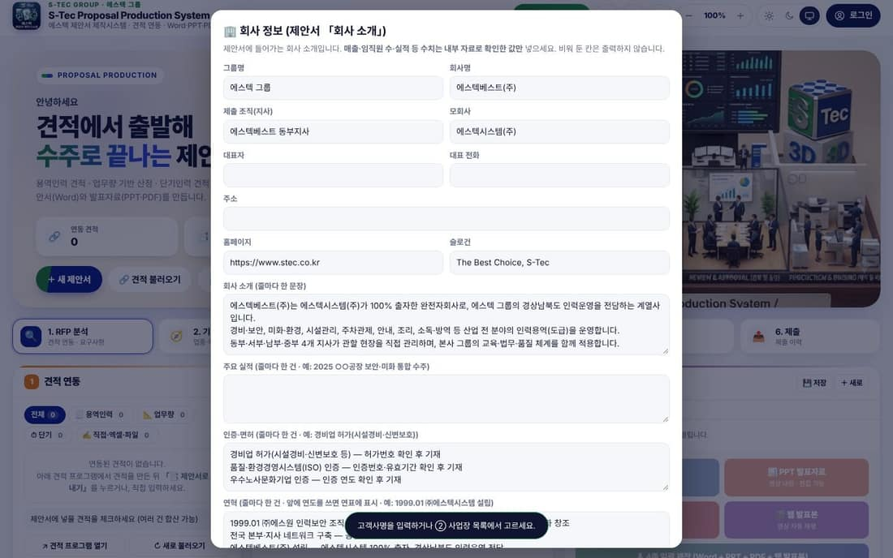

S-Tec Proposal Production System
에스텍 제안서 제작시스템
사용자 매뉴얼
User Manual
에스텍 제안서 제작시스템 — 사용 방법 (v2.1.2)

구분 | 내용 |
|---|---|
대상 | 프로그램을 쓰는 모든 사용자 |
프로그램 버전 | v2.1.2 |
주소 | https://sadness500-boop.github.io/s-tec-proposal-production-system/ |
차례
01 최신 버전 안내 (v2.1.2)
02 12개 프로그램 공통 화면
03 프로그램 소개
04 설치와 접속
05 로그인과 제안 담당 지정
06 상단 기능
07 ① 견적 연동
08 ② 고객사 · 사업장 선택
09 ③ RFP 분석 · 제안 기획
10 ④ 집필 · 검토 · 승인 · 출력
11 회사 정보
12 저장 · 제출 이력
13 자주 묻는 질문
1. 최신 버전 안내 (v2.1.2)
요점 이 매뉴얼은 v2.1.2 기준 · 이전 매뉴얼 v2.1.1 이후 바뀐 점 · 최신 화면 사진
이 매뉴얼은 에스텍 제안서 제작시스템 v2.1.2 기준입니다. 이전 매뉴얼(v2.1.1) 이후 바뀐 점을 아래에 모았고, 각 장의 설명은 이전 매뉴얼 내용을 바탕으로 합니다. 2026년 11월 22일에 12개 프로그램의 상단 · 하단 · 글씨체 · 화면 배치를 통일했습니다(「12개 프로그램 공통 화면」 장).

그림 1. v2.1.2 메인 화면
바뀐 점 |
|---|
사용자 매뉴얼 최신 버전으로 다시 작성(Word · PPT · PDF · 웹), 제작자 관리매뉴얼 보관함 올리기 · 삭제(제작자만), 기준정보 조직 구분 추가 |
현재 화면 기준 배포본(PC HTML · APK) |
함께 쓰는 사이트 → 메인 프로그램 카드, 하단 좌·우 배치 · 제작자/날짜 간격, 근태관리 상단 선, 결과 칸 위로 |
에스텍 그룹 기준 · 사업장 목록 기준정보 연동, 글씨체 · 기본 글씨 크기 통일, 하단 서명 반짝임 제거, 빈 공간 없는 메인 화면 배치 |
상단 「The Best Choice」 삭제 · 프로그램명 버튼 높이로 축소, 하단 서명 · 날짜 왼쪽과 같은 글씨체, 하단 불필요 문구 삭제 |
상단·하단 보완 — 모바일 줄바꿈·서명 크기, 원래 Things to enjoy 숨김(함께 쓰는 사이트로 통일), 하단 배경 충돌 수정, 아이콘 늦게 채워지는 프로그램 대응 |
상단·하단·함께 쓰는 사이트·프로그램별 사용자 매뉴얼 통일 |
제작자 관리매뉴얼 — 제작자만: 공개 파일·배포본에서 빼고 서버 비공개 보관함(owner-docs)에서 제작자 계정에게만 보기·내려받기 (통합관리시스템 공통) |
공통 상단 버튼(통합관리시스템과 같은 모양·새 아이콘): 사용자 매뉴얼 · 내 정보 · QR · 친구추천 · 화면 크기 · 테마 · 제작자 관리 콘솔(제작자만)/조직관리자 관리콘솔 · 계정 |
회사·조직별 공개 잠금 화면 (소속 조직에 공개되지 않은 프로그램 안내) |
2. 12개 프로그램 공통 화면
요점 상단: 아이콘 · 에스텍 그룹 · 버전 · 프로그램명 · 기능 버튼 · 하단: 에스텍 그룹 · 프로그램명 | 제작자 · 오늘 날짜 · 같은 아이디로 12개 프로그램 · 📂 자료 — 에스텍 그룹 공통 기준정보
에스텍 운영 및 영업 통합관리 시스템(메인)과 11개 프로그램은 상단 · 하단 모양과 버튼이 모두 같습니다. 한 프로그램에서 익힌 사용법을 다른 프로그램에서도 그대로 쓸 수 있습니다.
상단
그림 2. 상단 — 왼쪽 아이콘 · 에스텍 그룹 · 버전 · 영문 · 한글 프로그램명, 오른쪽 기능 버튼
왼쪽 아이콘을 누르면 프로그램 첫 화면으로 돌아갑니다. 「에스텍 그룹」 옆의 초록 표시는 지금 쓰고 있는 프로그램 버전입니다.
버튼 | 하는 일 |
|---|---|
📘 사용자 매뉴얼 | 이 프로그램 사용자 매뉴얼을 화면에서 보고 Word · PPT · PDF로 내려받기 |
🪪 내 정보 | 내 아이디 · 역할 · 소속 조직 · 관리범위 · 사용기한 확인, 소속 · 연락처 고치기 |
다운로드 QR | 휴대폰 설치용 QR과 앱 내려받기 |
친구 추천 | 프로그램 주소를 동료에게 보내기 |
− 100% + | 화면 크기(글씨 크기) 조절 |
☀ / ☾ / ▣ | 주간 · 야간 · 시스템 화면 |
🛡 관리 콘솔 | 제작자에게는 「제작자 관리 콘솔」, 조직관리자에게는 「조직관리자 관리콘솔」로 보입니다(일반 사용자에게는 안 보임) |
계정(이름) | 로그인 · 로그아웃 · 비밀번호 변경 |
하단

그림 3. 하단 — 왼쪽 「© 에스텍 그룹 · 프로그램명」, 오른쪽 「제작자 | 오늘 날짜」
하단 왼쪽에는 에스텍 그룹과 프로그램 이름이, 오른쪽에는 제작자(Designed & Developed by Rat Rae Choi)와 오늘 날짜가 나옵니다.
사용자 매뉴얼 보기 · 내려받기

그림 4. 📘 사용자 매뉴얼 — 화면에서 바로 보기, 장 목록 · 찾기, Word · PPT · PDF 내려받기
- 상단 「📘 사용자 매뉴얼」을 누르면 이 프로그램 매뉴얼이 화면에 열립니다(메인 프로그램은 통합 매뉴얼).
- 왼쪽 목록에서 장을 고르거나 찾기 칸에 낱말을 적어 찾습니다.
- 위쪽 Word · PPT · PDF 버튼으로 파일을 내려받습니다.
📂 자료 — 에스텍 그룹 공통 기준정보
화면 왼쪽 아래 「📂 자료」에서 회사(계열사) · 조직(본부 · 지사 · 지점) · 사업장을 엑셀로 넣습니다. 한 번 넣으면 12개 프로그램이 함께 씁니다. 사업장 목록은 에스텍 그룹 기준이라 다른 계열사 사업장도 함께 보입니다.
- 「📂 자료」 → 「입력 양식(엑셀) 받기」 또는 「현재 자료 받기」
- 엑셀의 「회사 · 조직 · 사업장」 시트에 한 줄에 하나씩 적기(머리글에 * 가 있는 칸은 꼭)
- 「엑셀 불러오기」 → 파일 고르기 → 미리보기 확인 → 「적용」
도움말 저장은 제작자 · 관리자만 할 수 있습니다. 실제 회사 · 지사 이름(예: 에스텍베스트 동부지사)은 서류에 그대로 쓰입니다. |
메인 프로그램과 함께 쓰는 사이트
메인 프로그램 첫 화면에는 12개 프로그램과 함께 「오늘의 뽑기판 · 팔도 제철맛길 · 팔도 축제길」 카드가 있습니다. 카드를 누르면 다시 로그인하지 않고 바로 열립니다.
3. 프로그램 소개
요점 견적 3종을 불러와 제안서 작성 · Word 제안서 · PPT · PDF · 웹 발표본 · 대외 제출용 / 내부 검토용 구분
S-Tec Proposal Production System(에스텍 제안서 제작시스템)은 용역인력 견적 · 업무량 기반 산정 · 단기인력 견적 3개 프로그램에서 만든 견적을 그대로 불러와, 업종 · 직종에 맞는 제안서(Word)와 발표자료(PPT · PDF · 웹 발표본)를 만드는 프로그램입니다.
일은 「🔍 RFP 분석 → 🧭 기획 → ✍ 집필 → ✅ 검토·승인 → 🖨 제작·제본 → 📤 제출」 여섯 단계로 진행합니다. 메인 화면의 단계 카드를 누르면 해당 단계로 이동합니다.

그림 5. 메인 화면 — 상단 버튼, 히어로, 6단계 카드, 작업 패널
단계 | 하는 일 |
|---|---|
1. RFP 분석 | 견적 연동 · 제안요청서(RFP) 요구사항 분석 |
2. 기획 | 업종 · 직종 · 제안 유형 · 평가 강조점 · 차별화 포인트 선택 |
3. 집필 | 13개 목차 초안 작성 · 목차별 편집 |
4. 검토·승인 | 8개 체크리스트 · 결재(작성 · 검토 · 승인) |
5. 제작·제본 | Word 제안서 · PPT 발표자료 · PDF · 웹 발표본 만들기 |
6. 제출 | 제출 이력 저장 · 다시 불러오기 |
4. 설치와 접속
요점 설치와 접속
방법 | 설치 · 접속 |
|---|---|
웹 주소 | https://sadness500-boop.github.io/S-Tec-Proposal-Production-System/ — PC · 휴대폰 인터넷 창에서 바로 엽니다. |
통합관리 시스템 | 에스텍 운영 및 영업 통합관리 시스템 메인 화면의 「제안서 제작」 카드 — 다시 로그인하지 않고 열립니다. |
안드로이드 앱 | 상단 「다운로드 QR」을 휴대폰으로 찍어 APK를 받아 설치합니다. |
아이폰 | 사파리로 웹 주소를 열고 공유 → 「홈 화면에 추가」. |
도움말 통합관리 시스템과 같은 아이디를 씁니다. 한 곳에서 로그인하면 다른 프로그램도 바로 열립니다. |
5. 로그인과 제안 담당 지정
요점 처음 실행하면 「제안 담당」을 지정해야 프로그램이 열립니다. · 처음이면 「처음이세요? 가입 신청」 → 이메일 · 비밀번호 · 성명 · 연락처 · … · 제작자(관리자)가 가입을 승인하고 이 프로그램 권한을 주면 사용 가능 · 아이디(이메일) · 비밀번호 입력 → 「이 기기 이름」 확인 → 로그인
- 처음이면 「처음이세요? 가입 신청」 → 이메일 · 비밀번호 · 성명 · 연락처 · 소속 입력
- 제작자(관리자)가 가입을 승인하고 이 프로그램 권한을 주면 사용 가능
- 아이디(이메일) · 비밀번호 입력 → 「이 기기 이름」 확인 → 로그인
- 비밀번호를 잊으면 「비밀번호를 잊었어요」로 재설정 메일을 받습니다.

그림 6. 로그인 화면
처음 실행하면 「제안 담당」을 지정해야 프로그램이 열립니다. 담당자 정보는 제안서 표지 · 연락처에 들어가며 상단 「제안 담당」 버튼으로 언제든 바꿉니다.
- 사진(선택) · 성명(필수) · 직책 입력
- 담당 지사 선택 — 사업장 목록이 이 지사로 시작합니다(회사 전체도 가능)
- 소속 · 연락처 · 이메일 입력 후 「제안 담당 지정하고 시작」

그림 7. 제안 담당 지정 창
6. 상단 기능
요점 상단 기능
버튼 | 기능 |
|---|---|
📘 사용자 매뉴얼 | 이 매뉴얼을 화면에서 보고 Word · PPT로 내려받기 |
🪪 내 정보 | 내 소속 · 연락처 확인 · 수정 |
다운로드 QR | 휴대폰 설치용 QR · 앱 내려받기 |
친구 추천 | 프로그램 주소를 동료에게 보내기 |
− 100% + | 화면 크기 조절 |
☀ / ☾ / ▣ | 주간 · 야간 · 시스템 화면 |
계정 | 로그인 · 로그아웃 · 비밀번호 변경, 권한이 있으면 관리 콘솔 열기 |
7. ① 견적 연동
요점 견적 프로그램 3종에서 만든 견적을 제안서로 가져옵니다. · 각 견적 프로그램 화면 오른쪽 아래 「📑 제안서로 보내기」를 누릅니다(↗ 버튼은 … · 제안서 제작시스템 「① 견적 연동」에서 「↻ 새로 불러오기」 → 넣을 견적을 체크합… · 견적 없이 쓰려면 「✍ 직접 입력」, 파일로 주고받으려면 「📂 연동 파일」(.js…
견적 프로그램 3종에서 만든 견적을 제안서로 가져옵니다. 여러 견적(예: 보안 + 업무량 기반 미화 + 행사 단기)을 함께 체크해 합산할 수 있습니다.
견적 프로그램 | 불러오는 내용 |
|---|---|
용역인력 견적 (S-Tec-Quotation-System) | 직종 · 직책 · 인원 · 근무형태 · 1인 월 단가 · 월 도급비 · 부가세 · 계약기간 총액 · 원가 구성 · 부대비용 |
업무량 기반 산정 (Workload-Based …) | 업무량(월 시간) · FTE · 편성안 · 인원 · 월 금액 · 업무별 비용 배분표 |
단기인력 견적 (S-Tec short estimate) | 행사 · 단기 항목별 인원 · 근무시간 · 일수 · 금액 · 공급가액 · 부가세 |
- 각 견적 프로그램 화면 오른쪽 아래 「📑 제안서로 보내기」를 누릅니다(↗ 버튼은 보내고 바로 제안서 제작시스템 열기).
- 제안서 제작시스템 「① 견적 연동」에서 「↻ 새로 불러오기」 → 넣을 견적을 체크합니다.
- 견적 없이 쓰려면 「✍ 직접 입력」, 파일로 주고받으려면 「📂 연동 파일」(.json)을 씁니다.

그림 8. ① 견적 연동 패널
도움말 보낸 견적은 같은 계정으로 로그인한 다른 기기에서도 보입니다. 「보내기」 전 견적은 인원 구성만 보이고, 금액은 「보내기」 후 확정됩니다. |
8. ② 고객사 · 사업장 선택
요점 제안할 고객사를 고릅니다.
제안할 고객사를 고릅니다. 기존 사업장 151곳은 지사(동부 · 서부 · 남부 · 중부) 별로 찾아 누르고, 새 영업 대상은 「✎ 신규 영업 고객사 직접 입력」으로 적습니다.

그림 9. ② 고객사 · 사업장 선택
9. ③ RFP 분석 · 제안 기획
요점 제안요청서(RFP) · 과업지시서 · 공고문을 불러오면 요구사항을 14개 구분으로 … · 이어서 제안의 방향을 고릅니다. · 모두 고르면 맨 아래 「✍ 제안서 초안 집필」을 누릅니다. · 「📂 파일 선택」(PDF · Word · 한글 HWPX · 메일 · 사진) 또는 …
제안요청서(RFP) · 과업지시서 · 공고문을 불러오면 요구사항을 14개 구분으로 나누고 대응 목차를 연결한 「요구사항 대응표」를 만듭니다. 사업명 · 발주처 · 기간 · 인원 · 예산 · 업종 · 직종도 추정해 채웁니다.
- 「📂 파일 선택」(PDF · Word · 한글 HWPX · 메일 · 사진) 또는 글을 붙여넣기
- 「🔎 요구사항 분석」을 누르면 요구사항 대응표가 만들어집니다.
- 파일은 이 기기 안에서만 처리되며 서버로 보내지 않습니다.

그림 10. RFP 불러오기와 고객사 · 제안 정보
이어서 제안의 방향을 고릅니다.
항목 | 선택지 |
|---|---|
제안 유형 (6) | 신규 수주 · 재계약 · 갱신 · 입찰(RFP) · 증원 · 업무 확대 · 업무량 기반 계약 전환 · 단기 · 행사 인력 |
직종 (9) | 보안 · 경비, 미화 · 환경, 주차관제, 시설관리, 안내 · 리셉션, 조리 · 급식, 소독 · 방역, 경호 · 행사, 특수 · 기타 |
업종 (12) | 제조 · 물류 · 병원 · 오피스 · 공공 · 대학 · 아파트 · 상업 · 호텔 · 건설 · 발전항만 · 외국공관 |
평가 강조점 (8) | 가격 경쟁력 · 서비스 품질 · 인력 안정성 · 고용승계 · 안전보건 · 법규 준수 · 스마트 운영관리 · ESG · 지역 고용 · 긴급대응 |
차별화 포인트 (10) | 통합관리 플랫폼 · 업무량 기반 산정 · 지사 현장 밀착 관리 · 직종×산업 표준 매뉴얼 · 법률 대응 체계 · Complaint D+0 대응 등 |
넣을 목차 | 13개 목차 중 필요한 것만 체크 |

그림 11. 제안 유형 · 직종 · 강조점 · 차별화 · 목차 선택
모두 고르면 맨 아래 「✍ 제안서 초안 집필」을 누릅니다.
10. ④ 집필 · 검토 · 승인 · 출력
요점 초안이 만들어지면 13개 목차별로 내용을 고치거나 끕니다: 제안 개요 · 검토 · 승인은 「작성 → 검토 요청 → 승인 → 제출 완료」 순서이며, 8개 체크…
초안이 만들어지면 13개 목차별로 내용을 고치거나 끕니다: 제안 개요 · 회사 소개 · 현황 분석 및 요구사항 · 운영 전략 및 차별화 · 인력 운영 계획 · 업무 수행 방안 · 교육 · 훈련 · 안전보건 · 법규 준수 · 품질관리 · Complaint 대응 · 스마트 운영관리 체계 · 운영 개시 · 인수인계 · 가격 제안 · 기대효과.
검토 · 승인은 「작성 → 검토 요청 → 승인 → 제출 완료」 순서이며, 8개 체크리스트(견적 금액 일치 · 요율 연도 · 법정 교육 · RFP 대응 · 고객사 명칭 · 회사 수치 검증 · 개인정보 · 오탈자)를 모두 확인해야 승인됩니다.
출력 | 내용 |
|---|---|
📄 Word 제안서 | 표지 · 목차 · 요약 · 표 · 붙임 견적 상세, 회사 머리글 · 바닥글 서명 |
📊 PPT 발표자료 | 16:9 발표자료, 영상 내장 · 편집 가능 |
인쇄 · 제출용, 영상은 누르면 재생 | |
🎬 웹 발표본 | 인터넷 창에서 여는 발표본, 영상 자동 재생 |
⬇ 4종 일괄 제작 | 위 4가지를 한 번에 만들기 |

그림 12. ④ 집필 · 검토 · 승인 · 출력 패널
주의 「대외 제출용」과 「내부 검토용」을 꼭 확인하세요. 원가 구성과 결재 기록은 내부 검토용에만 들어갑니다. |
11. 회사 정보
요점 「🏢 회사 정보」에서 제안서 「회사 소개」에 들어갈 그룹명 · 회사명 · 대표자 …
「🏢 회사 정보」에서 제안서 「회사 소개」에 들어갈 그룹명 · 회사명 · 대표자 · 주소 · 회사 소개 · 주요 실적 · 인증 · 면허 · 연혁을 편집합니다.

그림 13. 🏢 회사 정보
주의 매출 · 임직원 수 · 실적 등 수치는 내부 자료로 확인한 값만 넣으세요. 비워 둔 칸은 출력하지 않습니다. |
12. 저장 · 제출 이력
요점 「💾 저장」으로 작성 중인 제안서를 저장하고, 「＋ 새로」로 새 제안서를 시작합니다. · 「📤 제안서 · 제출 이력」에서 저장한 제안서를 눌러 다시 불러옵니다. · 로그인하면 여러 기기에서 같은 제안서 · 회사 정보를 씁니다.
- 「💾 저장」으로 작성 중인 제안서를 저장하고, 「＋ 새로」로 새 제안서를 시작합니다.
- 「📤 제안서 · 제출 이력」에서 저장한 제안서를 눌러 다시 불러옵니다.
- 로그인하면 여러 기기에서 같은 제안서 · 회사 정보를 씁니다.
13. 자주 묻는 질문
요점 자주 묻는 질문
질문 | 답 |
|---|---|
견적이 목록에 안 보여요 | 견적 프로그램에서 「📑 제안서로 보내기」를 눌렀는지, 같은 아이디로 로그인했는지 확인 후 「↻ 새로 불러오기」를 누르세요. |
금액이 견적과 달라요 | 견적 프로그램에서 다시 「보내기」 하면 최신 금액으로 바뀝니다. 검토 체크리스트 「견적 금액 일치」로 확인하세요. |
고객사에 원가가 보이면 안 돼요 | 출력할 때 「대외 제출용」을 고르면 원가 구성 · 결재 기록이 빠집니다. |
RFP 파일이 서버로 가나요 | 아니요. 파일 분석은 이 기기 안에서만 합니다. |
프로그램이 잠겨 있어요 | 제안 담당을 지정하면 열립니다. 권한 문제면 조직관리자나 제작자에게 문의하세요. |
Designed & Developed by Rat Rae Choi